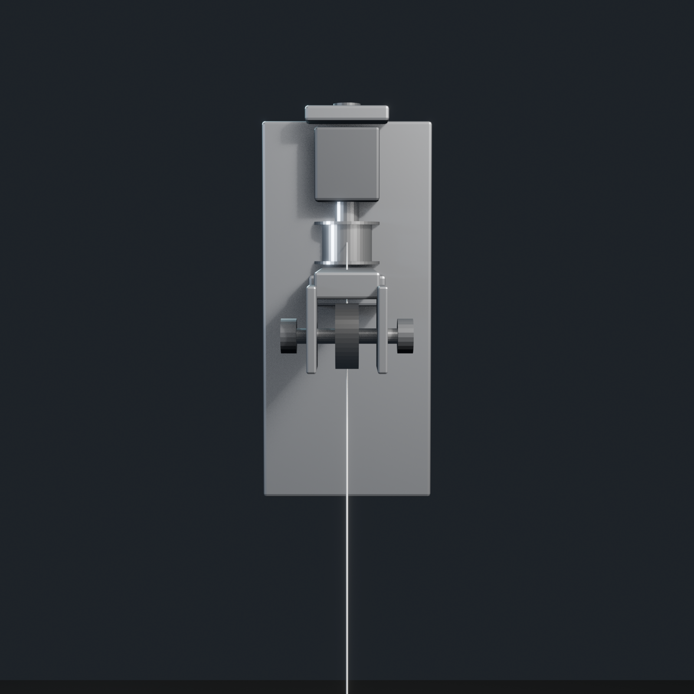
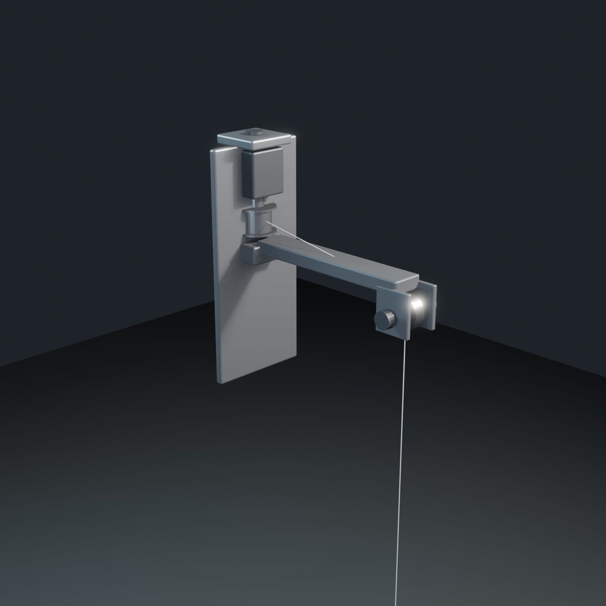
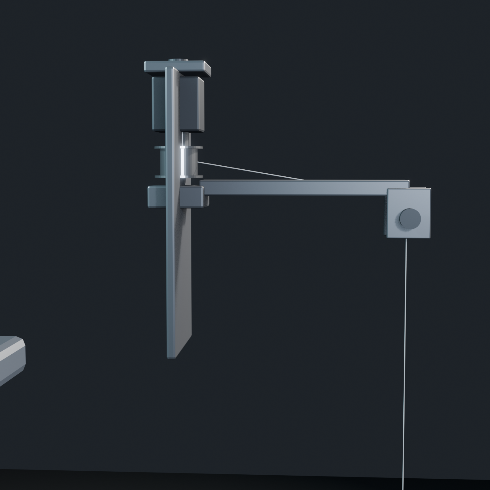
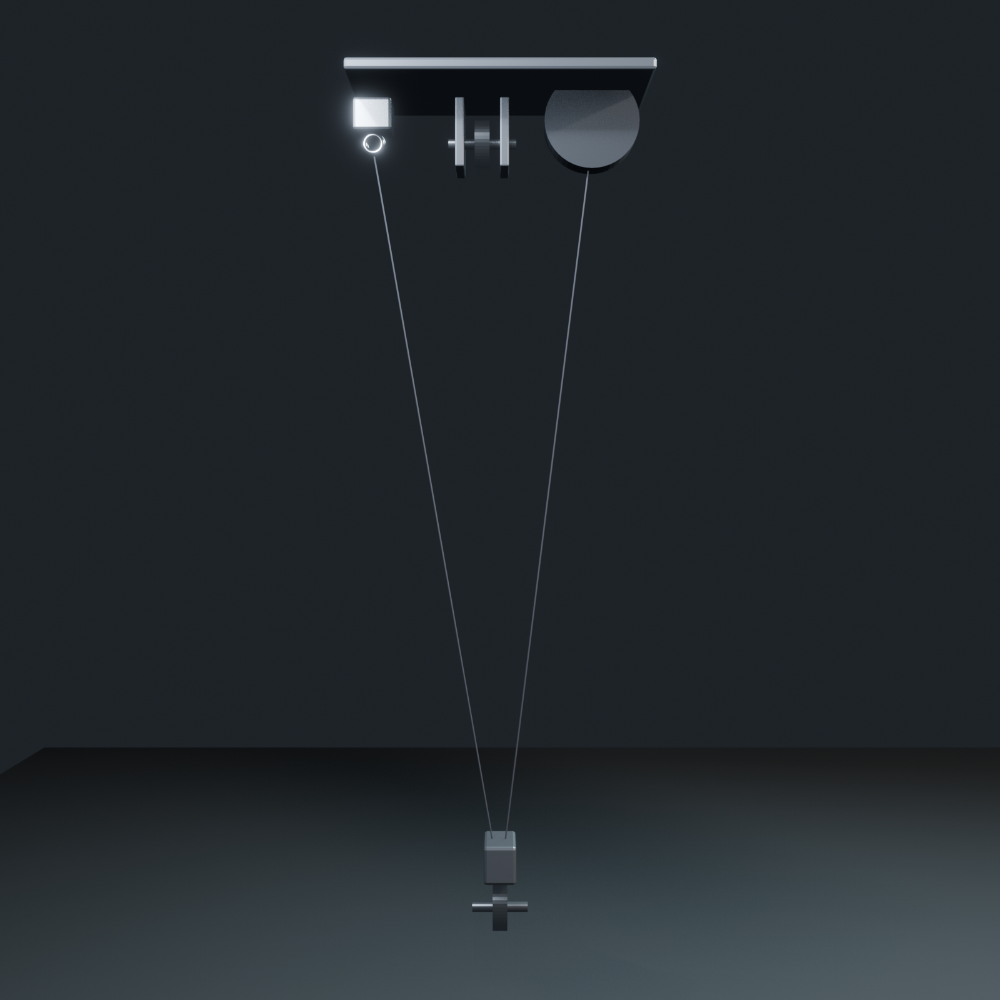
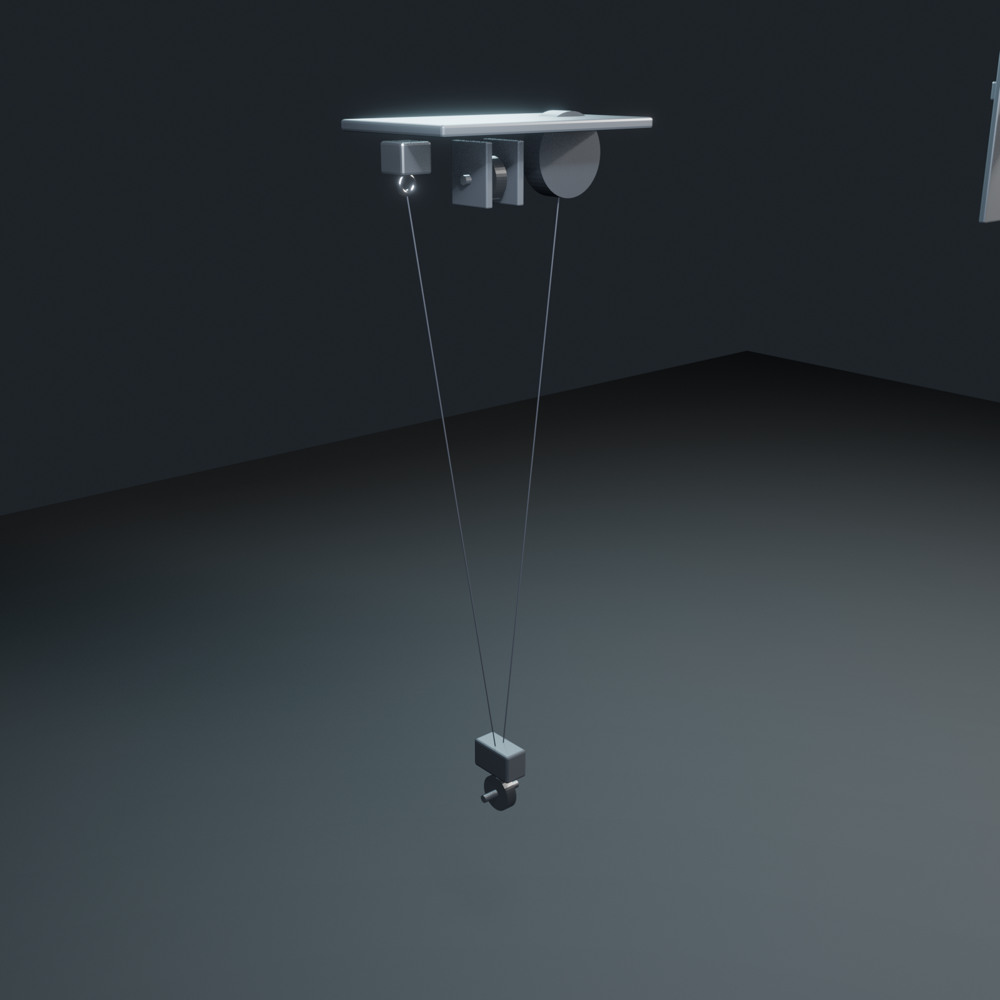
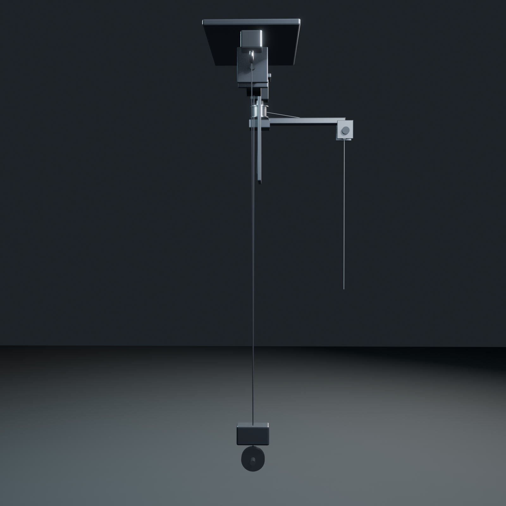

CoreBall — 绞盘总成
4 个一模一样 + 1 个完全不同
A 承力绞盘
× 4，完全可互换
卷筒
φ34 × 26，轴竖直
出线距离
横臂 200 mm（出线角 3.7°，保证单层绕线）
张力测量
出线滑轮的销轴做负荷销，不用张力臂
编码器
电机尾部磁编码器

正面

四分之三

侧面
B 供电张紧器
× 1，弹簧被动件
收线
恒力弹簧盘，约 1 N
走线
盘 → 吊点小滑轮 → 固定锚点，两股
无
线圈、滑环、电机、编码器 —— 全都没有
对吊点的力
+2 N 向上，恒定，可精确补偿

正面 · 两股线成 V

四分之三

侧面